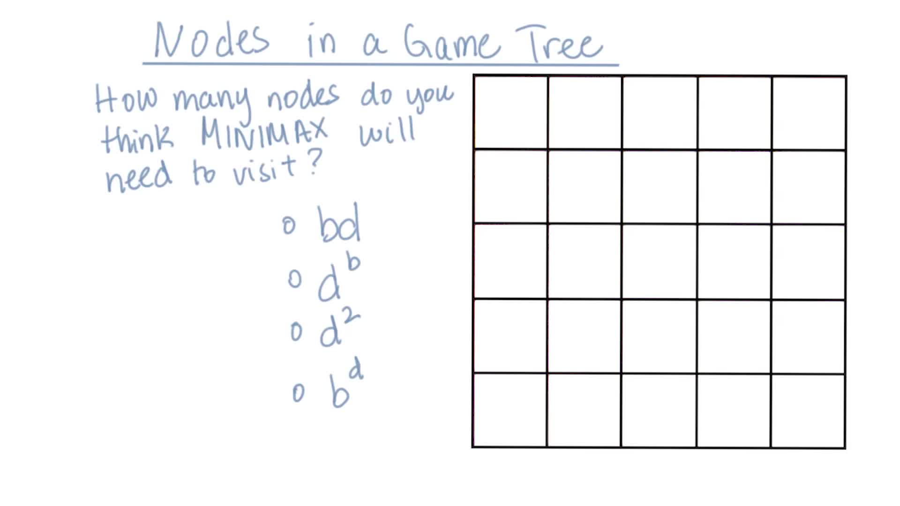

22. Number of Nodes in a Game Tree
Number of Nodes in a Game Tree
Question:
Start Quiz:

Solution:
INSTRUCTOR NOTE:
Choose the expression that best estimates the number of nodes that MINIMAX will need to visit, in order find an optimal solution.
Here b is the average branching factor and d is the depth of the game tree.